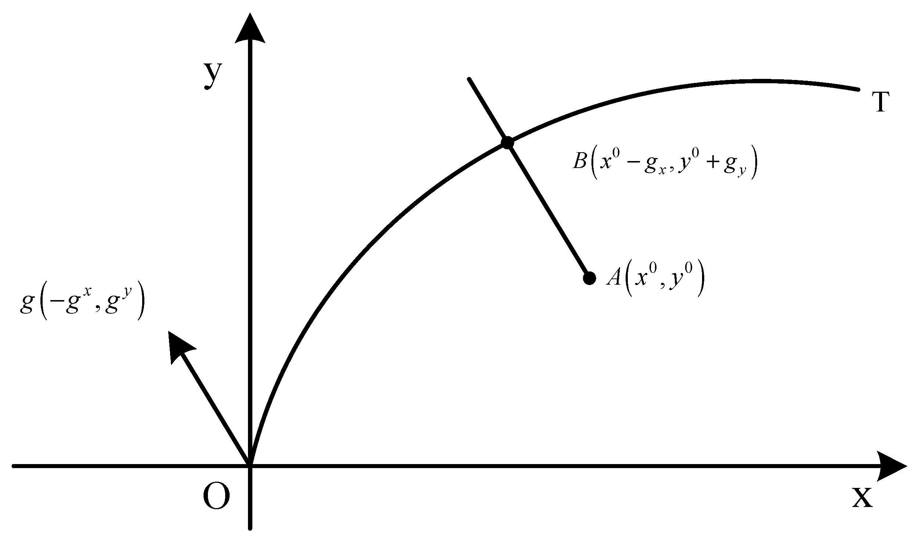

My research idea in one post
with a gentle introduction for beginners
October 4, 2020
In microeconomics, researchers often seek to evaluate the efficiency of a production unit, in order to provide further policy and management recommendations. In this post I will be explaining efficiency in what is know as the Pareto sense, and then I will provide some details on my own research and the methodology contribution that I am working on, please consider that this is a work in progress and that I am finishing my thesis around this work.
First, in the economic literature production is often characterized by a process that some economists describe using a functional form. This production process needs inputs(resources eg: Labor, Capital, etc), in order to produce outputs(goods). In entry level economic courses this is often described as follows :
\[Y = F(X)\] Where \(Y\) is the final output level (the quantity of goods produced), \(X\) is the amount of resources, or inputs given to the production process, and the function \(F(.)\) represents the technology of the production process that takes the resources and turn them into goods.
X <- runif(100, min = 0, max = 100) %>% round()
Y <- 0.9*X^0.3 # this represents the functional form that I used
cbind(X,Y) %>%
as_tibble() %>%
ggplot(aes(x= X, y=Y)) +
geom_point() +
theme_light()
All of the possible combination of \(X,Y\) produce what we call the production possibility frontier, This frontier represents all efficient combinations of inputs and outputs, which means that a producer cannot use a better combination than the ones on the frontier without worsening the outcome of either. Consequently, if we obtain a combination above or below the frontier, this combination is not efficient, because the producer can improve the outcome of one, or both of the input and output. In this case, I generated some data and used the function \(Y = F(X) = 0.9X^{0.3}\) to produce the frontier in the graphic above.
Remember, a producer’s objective is either to use less resources with a fixed production plan, or produce more goods with a fixed resource level.
Now, imagine that you have many firms, or countries, or in the case of my research schools, and we want to see how efficient they are. In this context, we consider the schools as observations with specific input/output combination, the same principle applies. If a unit is on the frontier that its considered as efficient, otherwise its not.
What I do is that instead of imposing a functional form on the production process i.e: \(F(.)\), I estimate this frontier using the data from the units, we call the Decision Making Units. This non-parametric technique is called : Data Envelopment Analysis or DEA.
When we estimate the frontier, that is enveloped with the efficient DMUs, we then compute the distance between the other DMUS and the frontier. To measure this distance, researchers relies either on an input oriented distance, where it is computed on the input axis, or an output oriented distance where the distance is computed over the output axis. However there is also other distances. In my research I use the directional distance, which measures the distance over both the inputs and the outputs, using also a direction vector that direct the projection of the DMU on the frontier. The distance computed between each DMU and the estimated frontier is also an estimate distance, which represent an efficiency measure that can be used to rank DMUs.

How directional distance project a DMU onto the estimated frontier
Using directional distances is very popular because its a general form to the distance functions. In fact, researchers use it to consider undesirable outputs, like pollutants in production process or the dropout rate in education, etc. Moreover, some researchers regress some contextual variables on the efficiency estimates in order to explain the variability of these efficiency estimate with regard to these variables, this process is called “two-stage DEA”.
This process is flawed, and cannot provide a valid explanation of the studied variability. A remedy to this is the double bootstrap procedure, where researchers increase the data, and smooth up the frontier and then re-estimate the efficiency and do the regression(that’s a tobit regression, or truncated, etc). However, this was not done with an estimate to the directional distance of the efficiency of DMUs.
In summary, I work on school efficiencies, and I treat mainly the inference issue in the efficiency analysis. My contrition is represented by an algorithm that generalizes the double-bootstrap procedure with a directional distance estimate of the efficiencies of DMUs.
Thank you for stopping by.